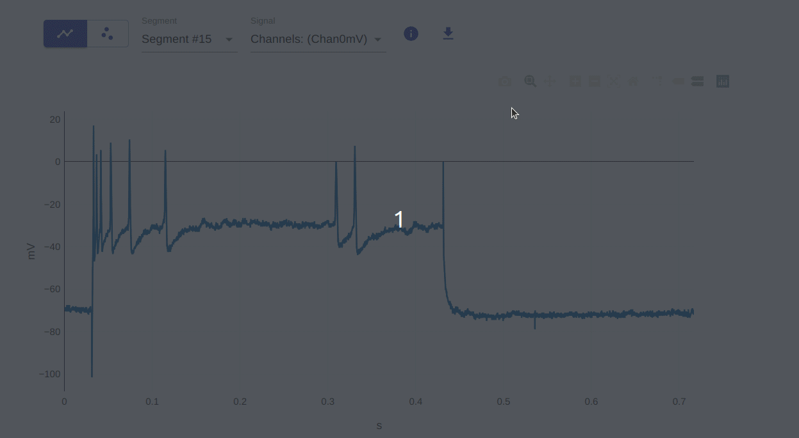
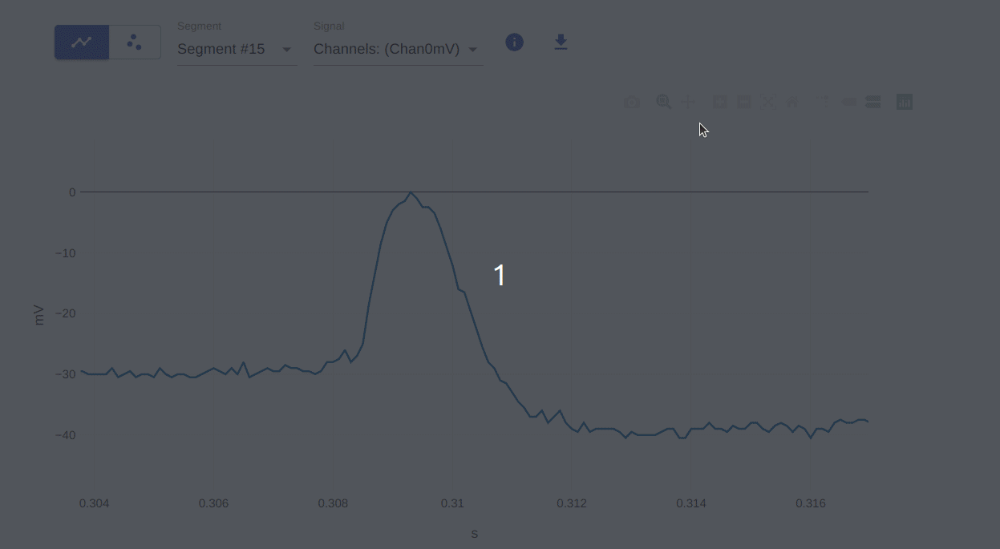
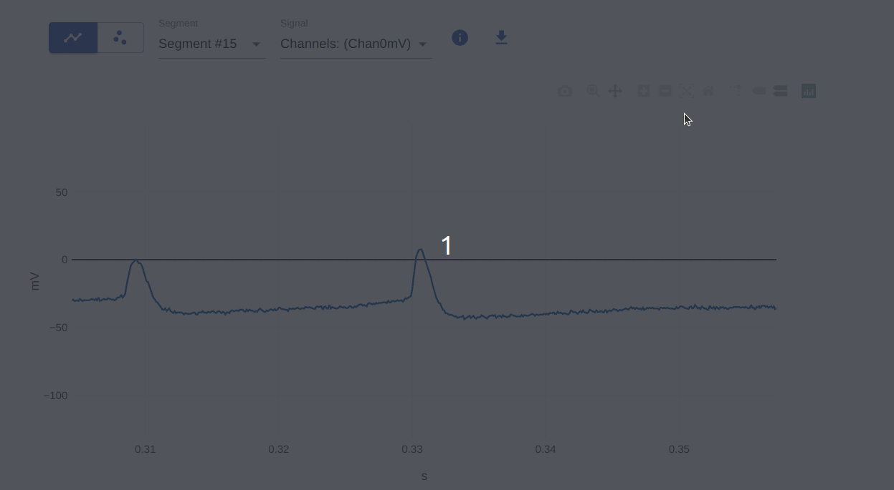
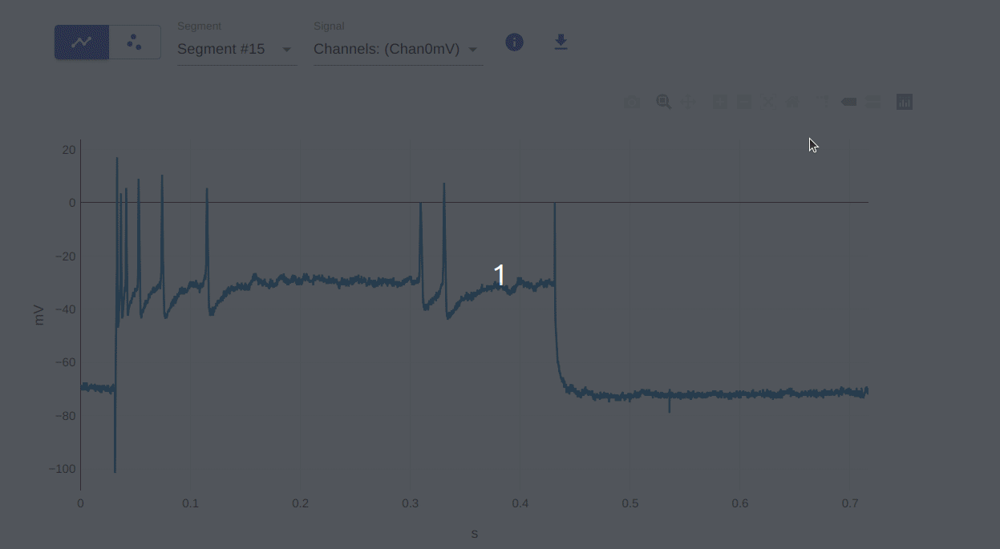

Visualizer Interactivity Features
The visualizer offers various interactive features for exploring data, courtesy of the underlying Plotly.js library. They are available from the toolbar that appears at the top right of a plot when you move the mouse over it.
About the animations. They were recorded with an earlier version of the visualizer, so the page around the plot looks different today. The toolbar buttons are the same in both the React and AngularJS components.
1. Download plot as PNG
Download the current plot as a PNG — useful for saving or sharing results.

2. Zoom (select region of interest)
Click and drag to select a region to zoom into. Double-click to reset.

3. Pan
Click and drag to pan. Double-click to reset.

4 & 5. Zoom in / Zoom out
Zoom in or out around the centre of the plot. Double-click to reset.

6. Autoscale
Rescales the axes to fit all the data after zooming or panning.

7. Reset axes
Returns the axes to their initial ranges, as when the plot was first drawn.

8. Toggle Spike Lines
Toggles the vertical and horizontal crosshairs shown on hover.

9 & 10. Show closest / Compare data on hover
Choose what is shown when you hover over the plot: the value of the nearest data point, or the values of all traces at the same time point.